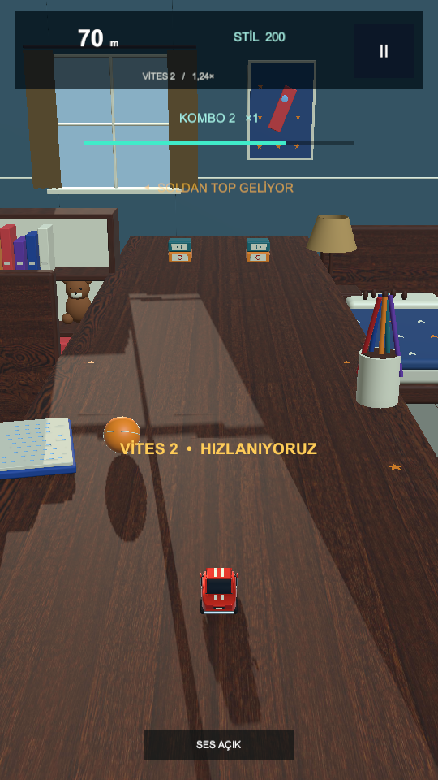
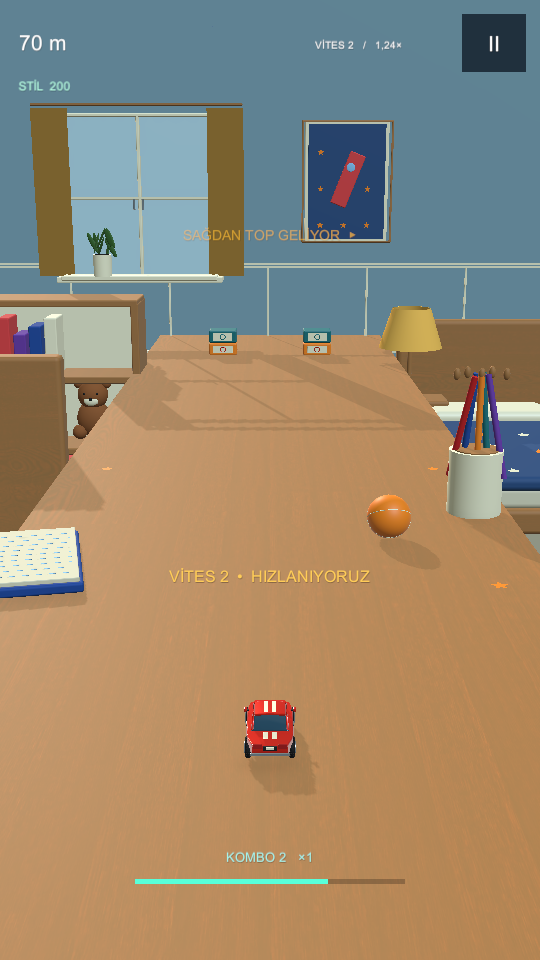
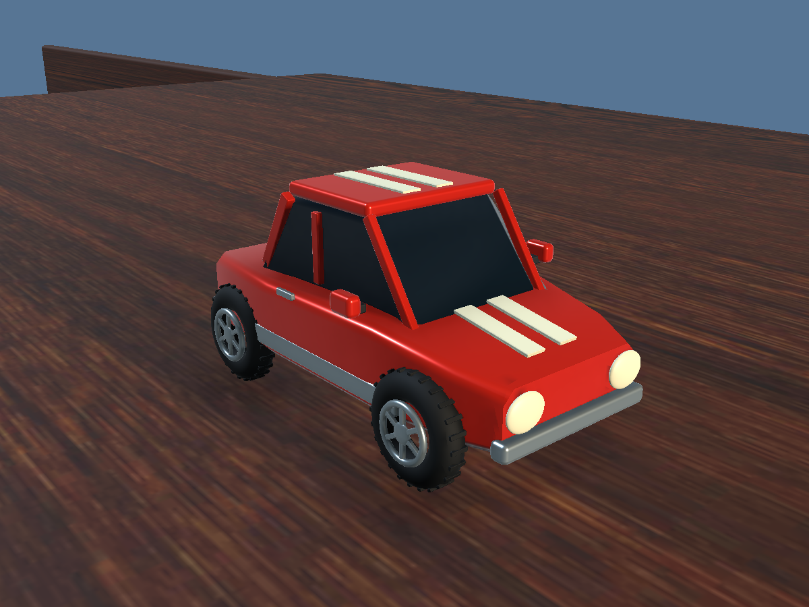
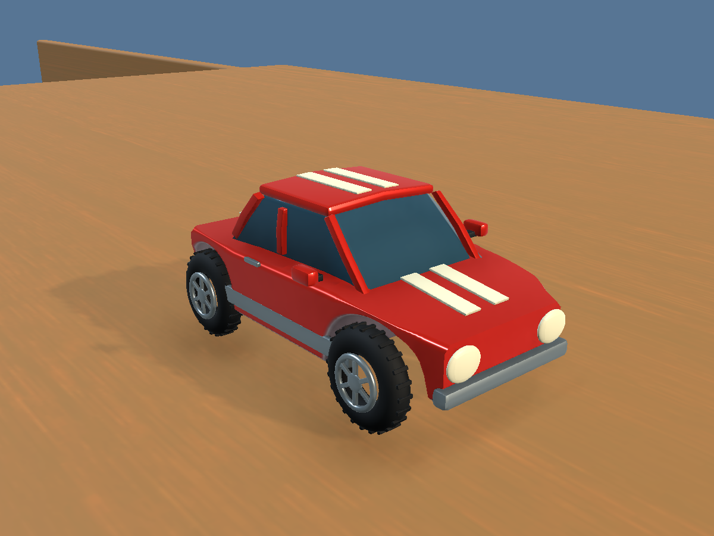

v0.3 → v0.4
İki görüntü de Unity'den: 540×960, 6.3 saniyelik gerçek sürüş. Kamera ve malzemeler sürümlerine aittir. Başlangıç seed'i aynı; yeni varyasyon üreticisi nedeniyle engel sırası birebir eşit değildir. Konsept görseli bu karşılaştırmaya dahil değildir.
v0.3 — Arcade Workshop
v0.4 — Refined Room
Daha sakin masa ve gölge, açık oda, köşe HUD, araç kabin/teker boşlukları ve pencere ayrıntıları. Mevcut oyun hâlâ onaylı konseptin doku/aydınlatma zenginliğine ulaşmadı. Fiziksel tablet performansı bu görüntülerden çıkarılamaz.
Araç yakın planı
v0.3
v0.4
Ayrıntılı sonuç ve açık kalite maddeleri